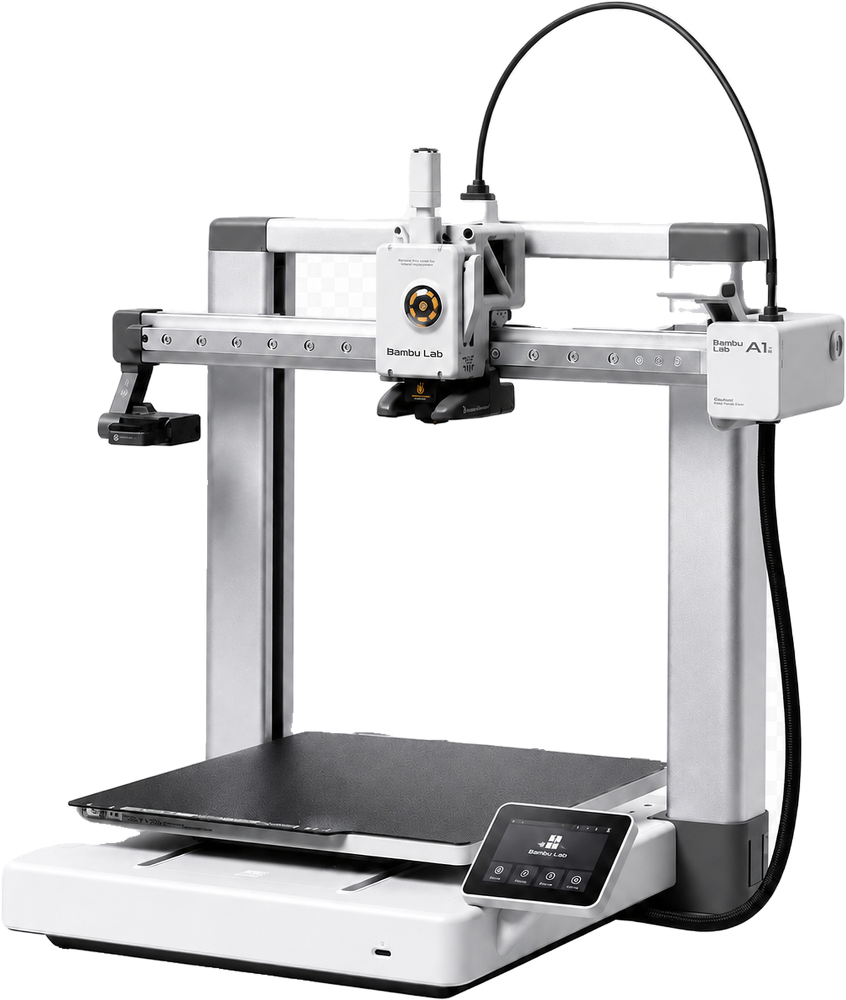
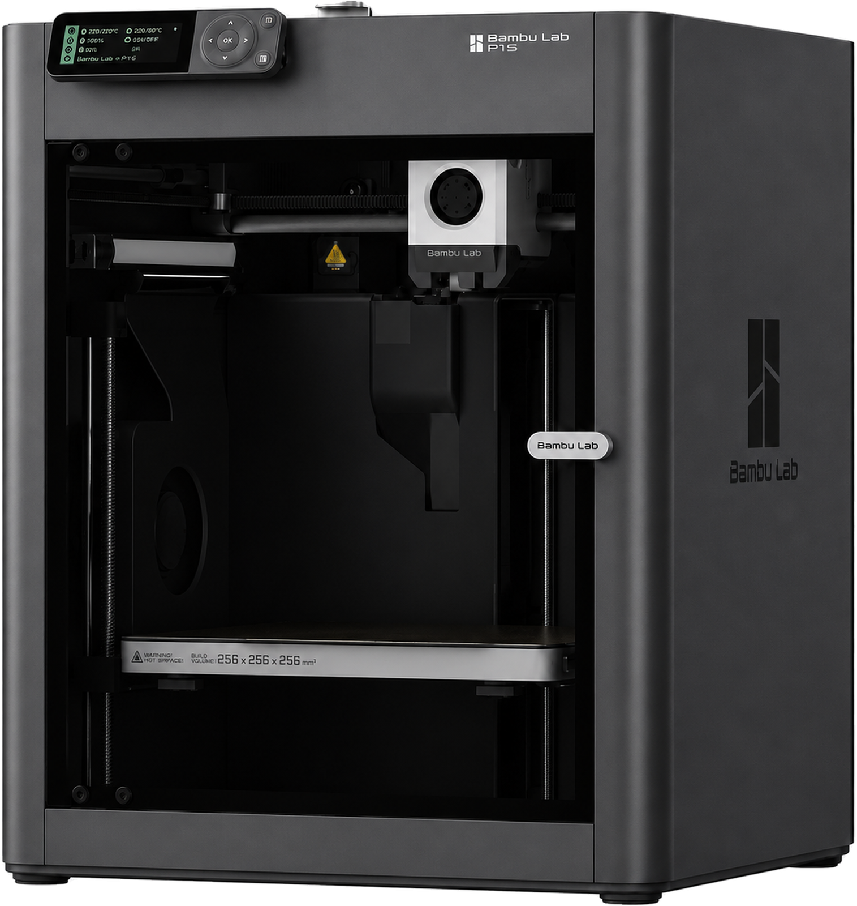
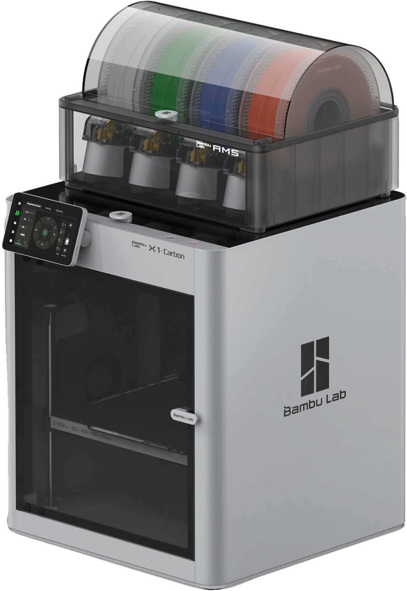
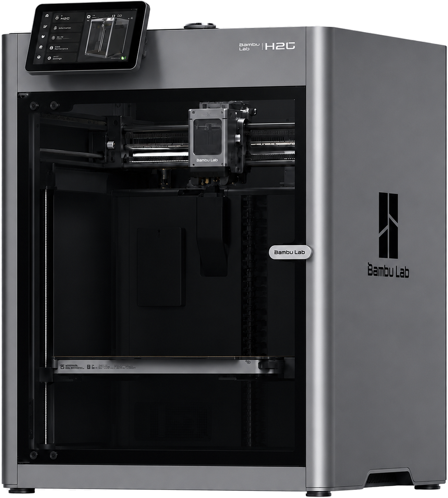
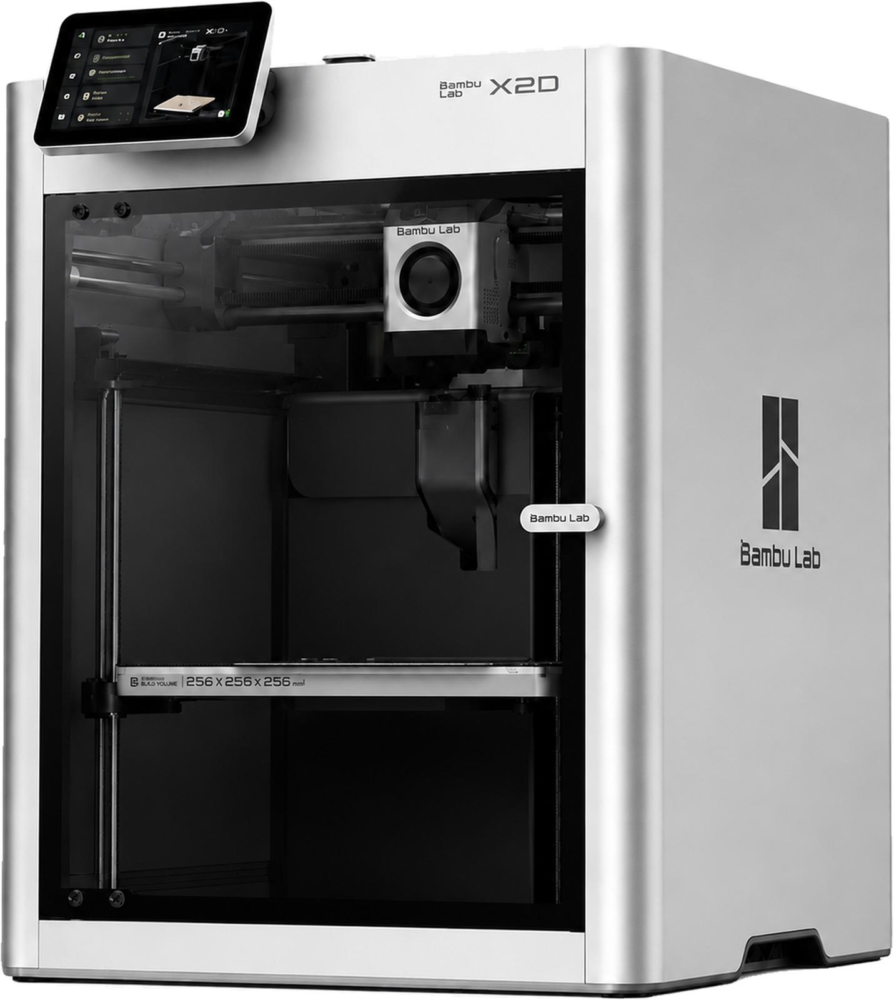

Todos
Negócio & Marca
Pós-venda & Garantia
Técnico & Bancada
Nenhuma matéria encontrada. Tente outro termo.
Tudo que você precisa para dominar a impressora, encantar o cliente e lucrar com o pós-venda. Diagnóstico, Manutenção e Pós-Venda — Bambu Lab Série A1.
Da entrada ao topo: recomende a máquina certa e abra a porta do upgrade.





A fonte da verdade — consulte sempre antes de qualquer diagnóstico ou decisão de garantia.